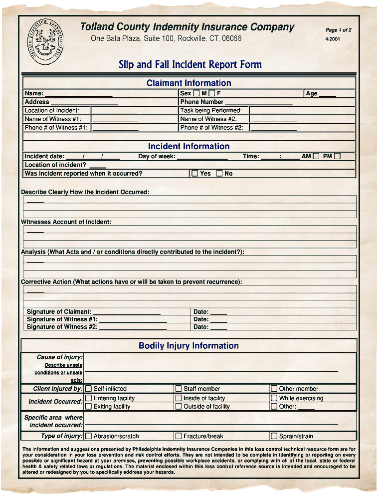

Below is a comprehensive list describing all known incidents caused by or relating to the Hoggestown Sphere Phenomenon. These records have been collected via police reports, official court documents, and/or subject/witness interviews conducted by trusted officials. Each documented incident includes both descriptions of the event, as well as new discoveries concluded by the events.
Tuesday, April 10, 1962
Margaret Hughes, 45, notifies police of the discovery of a strange, round sphere found in her backyard. Fearing the sphere to be Russian technology, the sphere is quickly taken into custody by Connecticut Police. After thorough examination, the sphere is deemed not a threat and placed in evidence storage, where it remains today.
Thursday, November 25, 1965
Andy Lovenswirth, 72, reports a sighting of two spheres in the parking lot of a local grocery store after buying some last minute ingredients for his family's Thanksgiving dinner later that day. Still nervous the spheres could have a nefarious purpose connected to the Cold War scare, Connecticut police again performed exhaustive tests to understand the purpose and make-up of these spheres. After inconclusive results, but determining the spheres were only strange, not dangerous, they were again placed in evidence storage.
Friday, July 31, 1970
Natalie Espanye, 38, is admitted to the hospital from blunt force trauma to the head after, according to her husband, a sphere fell from the sky, landing right on top of her while they were out picnicking in Gay City State Park. The blow, though it caused a serious gash, did not prove fatal and caused minimal damage to Mrs. Espanye's skull and brain. However, Mrs. Espanye reports remembering very little of the incident, and proved unfit to be able to confirm or deny her husband's claim.

Sunday, October 4, 1970
Carston Wells, 17, reportedly stumbles across three spheres while walking home through a wooded trail at 11 pm. Having become familiar with the spheres, only local police fulfill the call, rather than state police. However, due to a much more lackadaisical investigation by local police, one sphere is reported missing from the scene. After suspecting Carston and his friends for pulling a harmless prank and stealing the sphere from police custody, it is determined they were innocent. The missing sphere is still at large, and no one has reported its whereabouts since.
Sunday, May 1, 1977
Heather Kolowicz, 30, reports two spheres after her 5 year old son Peter comes across them while playing at a local playground. A few days after the discovery, Peter was admitted to the hospital after presenting an unusual illness, symptoms which included vomiting, fever, lack of appetite, and stomach cramps. The doctors were unable to diagnose the boy, and Ms. Kolowicz concludes the spheres must have been carrying some bacteria or disease which caused the boy to react. Again the police treated the spheres with danger and caution, but again were unable to determine any biohazardous material or bacteria present on or within the spheres. Peter assumed normal health again after a week in the hospital, but it remains a mystery exactly what ailed him.
Thursday, March 1, 1979
Colleen Bridgers, 59, reports sighting three spheres in a roadside ditch while on her morning run. A wealthy politician from Hartford, after following the case for a few years and developing a strong interest in the mystery of Hoggestown, offers to purchase the sphere from local police. After so many cases over the years, the evidence storage within the department is becoming cramped with spheres, and local police are frankly eager to be rid of them. The politician purchases two spheres, one from the case of 1979 and one from 1965, for $2,000 (about $8,500 today). The money goes to expanding the department's evidence room.
Sunday, July 4, 1981
A sphere appears in the middle of the Hoggestown Annual Fourth of July festival, where local musician Tommy Ruthers, 47, plays his third set of the night. Landing directly next to one of the speakers positioned near the stage, a piercing screech sound emanates from the sphere, sending festival-goers into a panic. Only when the sphere is rolled some distance from the speakers do these sounds stop.
Friday, August 20, 1993
Frank Causton-Lowe, 41, reports two spheres just outside a construction site he's working while taking a smoke break. A month later, the official Hoggestown Mystery Spheres Local Museum & Gift Shop opens its doors. The museum hopes to gain state/nation-wide attraction from the mystery of the spheres by compiling evidence, witness testimony, photos, and videos of the cases spanning 30-some years. Unfortunately, an electrical fire destroys the building in 1995 and, unable to recover, the museum is forced to shut down.
Tuesday, February 18, 2003
3
Sunday, September 2, 2007
2
Wednesday, June 10, 2009
1